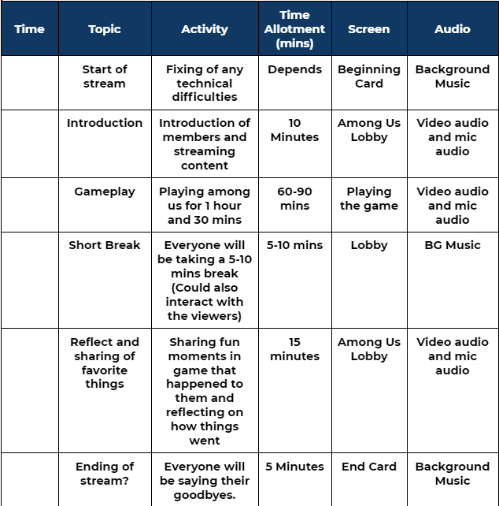

Outline
The group thought that having proper time and schedules
for the stream would be a good idea so they decided to do an outline first.
Having an outline for the stream organizes the air time
for each activities and makes the job of a streamer easier.
After a long time of thinking , they finally made an outline for the stream.
The outline is the image presented beside, and may change.
